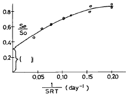
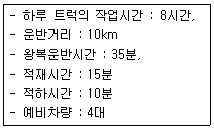
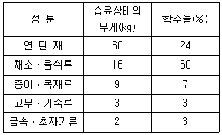
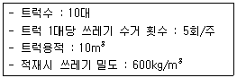
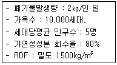
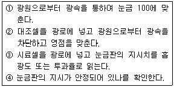

폐기물처리기사 (2003-05-25 기출문제)
1과목: 폐기물 개론
1. 다음 그림은 분뇨를 처리한 결과를 나타낸 것이다. ( )안에 들어갈 말로 알맞은 것은?(단, Se:유출수의 휘발성 고형물질 농도(mg/ℓ ) So:유입수의 휘발성 고형물질 농도(mg/ℓ ) SRT:고형물질의 체류시간)

- 생물학적 분해 가능한 유기물 분율
- 생물학적 분해 불가능한 휘발성 고형물 분율
- 생물학적 분해 가능한 무기 물질 분율
- 생물학적 분해 불가능한 무기물질 분율
(정답률: 알수없음)

2. 유기성 슬러지의 재이용 방법으로 가장 거리가 먼 것은 ?
- 소화가스이용
- 열분해
- 퇴비화
- 유효성분 직접추출
(정답률: 알수없음)
3. 1일 폐기물 발생량이 1,000톤인 도시에서 6톤 트럭을 이용하여 쓰레기를 매립지까지 운반하려고 한다. 다음과 같은 조건하에서 하루에 필요한 운반트럭의 대수는? (단, 예비차량 포함)

- 25대
- 29대
- 33대
- 36대
(정답률: 알수없음)
4. 다음은 슬러지의 수분을 결합상태에 따라 구분한 것이다. 이중 탈수가 가장 어려운 것은 ?
- 모관 결합수
- 간격수
- 표면 부착수
- 내부수
(정답률: 알수없음)
5. 슬러지를 처리하기 위하여 생슬러지를 분석한 결과 수분은 95%, 고형물중 휘발성 고형물은 70%, 휘발성 고형물의 비중은 1.1, 무기성 고형물의 비중은 2.2였다. 생슬러지의 비중은?
- 1.011
- 1.⑤0
- 1.152
- 1.159
(정답률: 알수없음)
6. 쓰레기를 물과 섞어 잘게 부순 뒤 물과 분리하여 용적 감소하는 장치는 ?
- Grinder
- Hammer Mill
- Balers
- Pulverizer
(정답률: 알수없음)
7. LCA의 구성요소와 가장 거리가 먼 것은 ?
- 자료평가
- 개선평가
- 목록분석
- 목적 및 범위의 설정
(정답률: 알수없음)
8. 폐기물의 성상분석 절차중 가장 먼저 이루어 지는 것은?
- 절단 및 분쇄
- 건조
- 불연성물질과 가연성물질분류
- 밀도측정
(정답률: 알수없음)
9. 어느 도시의 쓰레기 특성을 조사하기 위하여 시료 90㎏에 대한 습윤상태의 무게와 함수율을 측정한 결과가 다음표와 같을 때 이 시료의 건조중량은?

- 약 50㎏
- 약 65㎏
- 약 70㎏
- 약 75㎏
(정답률: 알수없음)
10. 새로운 쓰레기 수거 시스템인 관거수거방법중 공기수송에 관한 설명으로 틀린 것은?
- 공기수송은 고층주택 밀집지역에 적합하며 소음방지 시설이 필요하다.
- 진공수송은 쓰레기를 받는 쪽에서 흡인하여 수송하는 것으로 진공압력은 최소 1.5kgf/cm2 이상이다.
- 진공수송의 경제적인 수집거리는 약 2km 정도이다.
- 가압수송은 쓰레기를 불어서 수송하는 방법으로 진공수송보다는 수송거리를 더 길게할 수 있다.
(정답률: 알수없음)
11. 쓰레기를 압축시킨후 용적이 45% 감소되었다면 압축비는?
- 1.4
- 1.6
- 1.8
- 2.0
(정답률: 알수없음)
12. 10년이상 오래된 매립지에서 발생되는 침출수의 특성으로 가장 알맞는 것은?
- COD / TOC ＜ 2.0 , BOD / COD ＜ 0.1
- COD / TOC ＜ 2.0 , BOD / COD ＞ 0.5
- COD / TOC ＞ 2.8 , BOD / COD ＜ 0.1
- COD / TOC ＞ 2.8 , BOD / COD ＞ 0.5
(정답률: 알수없음)
13. 수거대상 인구가 30,000명인 지역에서 1주일 동안 쓰레기수거상태를 조사한 결과 다음과 같다. 이 지역의 1인 1일당 쓰레기 발생량은?

- 약 0.8kg/인· 일
- 약 1.4kg/인· 일
- 약 1.8kg/인· 일
- 약 2.1kg/인· 일
(정답률: 알수없음)
14. 쓰레기 배출량에 영향을 미치는 모든 인자를 시간에 대한 함수로 나타낸 후 시간에 대한 함수로 표현된 각 영향 인자들간의 상관관계를 수식화하여 쓰레기발생량을 예측하는 방법은?
- 동적모사모델
- 다중회귀모델
- 인자함수모델
- 경향법
(정답률: 알수없음)
15. 다음중 폐유리병을 크기 및 색깔별로 선별할 수 있는 방법은?
- Hand Sorting
- Flotation
- Wet-Classifier
- Screen
(정답률: 알수없음)
16. 폐기물을 건조시켜 수분함량을 95%에서 15%로 감소시켰다면 폐기물 중량은 몇 % 감소하였는가? (단, 폐기물 비중은 1.0으로 가정함)
- 약 85
- 약 89
- 약 94
- 약 97
(정답률: 알수없음)
17. 우리나라의 일반적인 분뇨의 특성에 관한 내용과 가장 거리가 먼 것은?
- 비중은 1.02 정도이다.
- 토사류는 0.3∼0.5% 정도이다.
- 점도는 비점도로 1.2∼2.2 정도이다.
- 협잡물의 함유량은 12∼15% 정도이다.
(정답률: 알수없음)
18. 다음중 관거를 이용한 쓰레기의 수송에 관한 설명으로 알맞지 않는 것은?
- 잘못 투입된 물건은 회수하기가 어렵다.
- 가설후에 경로변경이 곤란하고 설치비가 높다.
- 자동화· 무공해화가 가능하고 눈에 띄지 않는다.
- 쓰레기의 발생밀도가 높은 지역은 현실성이 없다.
(정답률: 알수없음)
19. X90 = 3.8㎝로 도시폐기물 파쇄하고자 할 때 즉 90% 이상을 3.8cm보다 작게 파쇄하고자 할 때 Rosin-Rammler 모델에 의한 특성입자크기 Xo는? (단, n=1로 가정 )
- 1.65㎝
- 2.25㎝
- 3.55㎝
- 4.35㎝
(정답률: 알수없음)
20. 투입량이 1 ton/h 이고, 회수량이 700 kg/h (그중 회수대상물질은 550 kg/h) 이며 제거량은 300 kg/h (그중회수대상물질은 70 kg/h) 일 때 회수율은? ( Worrell 식: E(선별효율) = ( x 회수율)· ( y 기각율) = x1/x0 × y2/y0 )
- 약 54 %
- 약 61 %
- 약 67 %
- 약 72 %
(정답률: 알수없음)
2과목: 폐기물 처리 기술
21. 직경이 2.5m인 trommel screen의 임계속도는?
- 27rpm
- 37rpm
- 47rpm
- 57rpm
(정답률: 알수없음)
22. 슬러지 고형화 방법중 시멘트기초법에 관한 설명으로 적절치 못한 것은?
- 고형화 재료로 포틀랜드 시멘트를 이용한다.
- 고농도의 중금속 폐기물처리에 적합한 방법이다.
- 폐기물내에 고형물질이 많게 되면 최대강도를 내기 위한 물/시멘트 비는 증가한다.
- 시멘트혼합물 첨가제로 포졸란이 흔히 이용된다
(정답률: 알수없음)
23. Belt Press를 이용한 탈수에 영향을 주는 운전요소와 가장 거리가 먼 것은 ?
- 벨트의 종류
- 세척수의 유량과 압력
- 폴리머 주입량과 주입 지점
- Bowl 최대속도 유지 시간
(정답률: 알수없음)
24. 매립지에 흔히 쓰이는 합성차수막의 재료와 가장 거리가 먼 것은?
- high-density polyethylene(HDPE)
- polyvinyl chloride(PVC)
- polypropylene(PP)
- neoprene(CR)
(정답률: 알수없음)
25. 폐산의 처리 방법과 가장 거리가 먼 것은?
- 증발농축법
- 용매추출법
- 냉각결정법
- 배소법
(정답률: 알수없음)
26. 유해폐기물을 물리화학적으로 처리하기위한 방법중 활성탄 흡착에 관한 설명으로 틀린 것은?
- 분자량이 큰 화학물질은 활성탄 흡착이 잘된다.
- 극성이 낮은 화학물질은 활성탄 흡착이 잘된다.
- 용해도가 높은 화학물질은 활성탄 흡착이 잘된다.
- 페놀은 활성탄 흡착적용에 타당성이 높은 물질이다.
(정답률: 알수없음)
27. 거시적인 경제성 평가를 통하여 폐기물 관리체계를 최적화할 수 있는 컴퓨터 모델은?
- HELP모델
- WRAP모델
- QUAL2E모델
- WASP5모델
(정답률: 알수없음)
28. 다음 습식산화(Wet Oxidation)에 관한 설명 중 잘못된것은?
- 질소 제거율이 높다.
- 보통 70기압, 210℃로 가동한다.
- 처리된 Sludge는 탈수성이 좋다.
- 시설의 수명이 짧고 투자,유지비가 높다.
(정답률: 알수없음)
29. 슬러지를 고형화하는 목적과 거리가 먼 것은 ?
- 슬러지를 다루기 용이하게 함 (Handling)
- 슬러지내 오염물질의 용해도 감소 (Solubility)
- 유해한 슬러지인 경우 독성감소 (Toxicity)
- 슬러지 표면적 감소에 따른 운반 매립 비용감소(Surface)
(정답률: 알수없음)
30. 연직차수막과 표면차수막의 비교로 알맞지 않는 것은 ?
- 지하수 집배수시설의 경우 연직차수막은 불필요하나 표면차수막은 필요하다.
- 연직차수막은 지하에 매설하기 때문에 차수성 확인이 어렵다.
- 연직차수막은 단위면적당 공사비는 저렴하나 총공사비는 비싸지며 표면차수막은 이와 반대이다.
- 연직차수막은 차수막 보강시공이 가능하다.
(정답률: 알수없음)
31. 혐기성소화조에서 독성농도(㎎/ℓ )로 작용하는 농도의 범위로 가장 알맞는 것은?
- Sodium ; 1,000 ~ 2,000(㎎/ℓ )
- Potassium ; 2,500 ~ 4,000(㎎/ℓ )
- Magnesium ; 1,200 ~3,500 (㎎/ℓ )
- Ammonium ; 1,100 ~ 1,600 (㎎/ℓ )
(정답률: 알수없음)
32. 퇴비화를 하기 위한 유기성폐기물의 [탄소/질소비]에 관한 설명으로 알맞지 않는 것은?
- 탄소는 미생물들이 생장하기 위한 에너지원이다.
- 질소는 생장에 필요한 단백질합성에 주로 쓰인다.
- 탄소/질소비가 20보다 낮으면 질소가 암모니아로 변하여 pH를 증가시킨다.
- 도시하수슬러지는 탄소/질소비가 높아 질소부족현상을 유발한다.
(정답률: 알수없음)
33. 3785m3/일 규모의 하수처리장의 유입수의 BOD와 SS농도가 각각 200mg/L 라고 하고, 1차 침전에 의하여 SS는 50%, 이에 따라 BOD는 30% 제거된다. 후속처리인 활성슬러지공법에 의해 남은 BOD의 90%가 제거되며 제거된 kgBOD 당 0.5kg 의 슬러지가 생산된다면 1차 침전에서 발생한 슬러지와 활성슬러지공법에 의해 발생된 슬러지량의 총합(kg/일)은?
- 약 529
- 약 577
- 약 617
- 약 844
(정답률: 알수없음)
34. 중금속슬러지를 시멘트 고형화할 때 용적변화율(%)은? (단, - 고형처리전의 중금속슬러지 비중: 1.2 - 고화처리후 폐기물의 비중: 1.5 - 시멘트 첨가량: 슬러지 무게의 50%)
- 20% 증가
- 30% 증가
- 40% 증가
- 50% 증가
(정답률: 알수없음)
35. 어느 도시의 쓰레기 발생량은 1,000t/일 이고 밀도는 0.5t/m3이며 trench법으로 매립할 계획이다. 압축에 따른 부피감소율 40%, trench 깊이 2.5m, 매립에 사용되는 도랑면적 점유율이 전체부지의 30% 라면 년간 필요한 전체 부지 면적은?
- 584,000m2
- 623,000m2
- 775,000m2
- 836,000m2
(정답률: 알수없음)
36. LFG(landfill gas)의 회수재활용을 위한 일반적인 조건과 가장 거리가 먼 것은?
- 폐기물 속에 50%의 분해가능물질과 이 물질의 50%가 실제 분해되어 기체를 발생시켜야 한다.
- 발생기체의 50%이상을 포집할 수 있어야 한다.
- 폐기물 1kg당 0.37m3의 기체가 생성되어야 한다.
- 기체의 발열량이 약 7,500kcal/Nm3이상이어야 한다.
(정답률: 알수없음)
37. 기계식 반응조 퇴비화 공법에 관한 설명으로 틀린 것은?
- 기계식 반응조 퇴비화 공법은 퇴비화가 밀폐된 반응조내에서 수행된다.
- 일반적으로 퇴비화 원료물질의 성분에 따라 수직형과 수평형으로 나뉘어 퇴비화를 수행한다.
- 수직형 퇴비화 반응조는 반응조 전체에 최적조건을 유지하기 어려워 생산된 퇴비의 질이 떨어진다.
- 수평형 퇴비화 반응조는 수직형 퇴비화 반응조와 달리 공기흐름 경로를 짧게 유지할 수 있다.
(정답률: 알수없음)
38. 폐용제류의 재생처리 방법과 가장 거리가 먼 것은?
- 용매 추출법
- 황산백토 침전법
- 스팀 탈리법
- 분별 증류법
(정답률: 알수없음)
39. 고화법은 고화재가 무기성인가 유기성인가에 따라 무기성 방법과 유기성 방법으로 나눌 수 있다. 유기성 고형화의 특징으로 알맞지 않는 것은?
- 수밀성이 매우 크며 다양한 폐기물에 적용할 수 있으나 처리비용이 고가이다.
- 최종 고화재의 체적 증가가 다양하다.
- 상온 및 상압하에서 처리가 가능하며 중합체 구조로서 장기적 안정화가 가능하다.
- 미생물, 자외선에 대한 안정성이 약하다.
(정답률: 알수없음)
40. 폐기물을 위생매립(sanitary land fill)시키는 일반적인 방법과 가장 거리가 먼 것은?
- 터널식(tunnel)
- 도랑식(trench)
- 경사식(slope)
- 지역식(area)
(정답률: 알수없음)
3과목: 폐기물 소각 및 열회수
41. [ 반응열의 양은 반응이 일어나는 과정에 무관하고, 반응 전후에 있어서의 물질 및 그 상태에 의하여 결정된다 ] 위의 내용으로 알맞는 법칙은?
- Graham의 법칙
- Dalton의 법칙
- Hess의 법칙
- Le Chatelier의 법칙
(정답률: 알수없음)
42. 다음의 과열기의 설명 중 틀린 것은?
- 과열기에는 방사형, 대류형 그리고 방사· 대류형 과열기가 있다.
- 과열기는 그 부착 위치에 따라 전열 형태가 다르다.
- 보일러의 부하가 높아질수록 방사 과열기에 의한 과열온도가 상승한다.
- 대류 및 방사 과열기를 조합하여 보일러의 부하변동에 대해 과열 증기의 온도변화를 비교적 균일화 할 수 있다.
(정답률: 알수없음)
43. 다상 소각로(Multiple hearth incinerator)에 관한 설명으로 알맞지 않는 것은?
- 고온 하에서 용융하는 성질이 있는 슬러지에 대한 소성 온도의 관리가 용이하다.
- 유동층에 비하여 출구 배기 가스의 유속이 느려 비산하는 먼지의 양이 적다.
- 수분이 많은 저열량 폐기물이나 하수 슬러지등의 유기성 성분 슬러지 소각에 많이 채택된다.
- 국부 연소를 피할 수 있고 클링커 생성을 방지 할 수있다.
(정답률: 알수없음)
44. 폐기물의 연소 및 열분해에 관한 설명이다. 잘못 설명된 것은 ?
- 열분해란 무산소 또는 저산소 상태에서 유기성 폐기물을 열분해시키는 방법이다.
- 습식산화는 젖은 폐기물이나 슬러지를 고온,고압 하에서 산화시키는 방법이다.
- Steam Reforming 이란 산화시에 스팀을 주입하여 일산화탄소와 수소를 생성시키는 방법이다.
- 가스화란 완전연소에 필요한 양보다 과잉 공기 상태에서 산화시키는 방법이다.
(정답률: 알수없음)
45. 액주입식 소각로에 관한 설명으로 알맞지 않은 것은 ?
- 소각로의 가장 핵심은 폐기물의 미분사장치인 노즐 버너이다.
- 형식은 수평점화방식,상방점화,하방점화가 있다.
- 수평점화방식 소각로의 재(ash)배출 설비는 연소실과 집진시설 하부에 설치한다
- 하방점화 방식의 경우에는 염이나 입상물질을 포함한 폐기물의 소각이 가능하다.
(정답률: 알수없음)
46. 일반적으로 소각 연소과정에서 발생하는 질소산화물 중 Fuel NOx 저감효과가 가장 높은 방법은?
- 이단연소에 의해 연소 시킨다
- 배기가스를 재순환 시킨다
- 연소실에 수증기를 주입한다
- 연소용 공기의 예열온도를 낮게 유지한다
(정답률: 알수없음)
47. 폐플라스틱을 열적처리에 의하여 처리하고자 한다. 다음의 플라스틱 재질 중 발열량(kcal/kg)이 가장 낮은 것은?
- 폴리에틸렌(PE)
- 폴리프로필렌(PP)
- 폴리스티렌(PS)
- 폴리염화비닐(PVC)
(정답률: 알수없음)
48. 대규모 여열이용공정중 발전을 주목적으로 하는 경우에 관한 설명과 가장 거리가 먼 것은?
- 전열관 고온부식의 문제로 증기조건이 제약된다.
- 터-빈은 공장입지조건, 건설비등을 고려하여 공냉식 복수기가 일반적으로 사용된다.
- 증기압력은 5-10kg/m2G 범위의 포화증기로 설계한다.
- 고온부식은 전열관의 온도가 500-600℃에서 가장 심해진다.
(정답률: 알수없음)
49. 플라스틱을 열분해에 의하여 처리하고자 한다. 열분해 온도가 적절치 못한 것은?
- PE, PP, PS : 550℃에서 완전분해
- PVC, 페놀수지, 요소수지 : 650℃에서 완전분해
- HDPE : 400-600℃에서 완전분해
- ABS : 350-550℃에서 완전분해
(정답률: 알수없음)
50. 연소기 내에 단회로(short-circuit)가 형성되면 불완전 연소된 가스가 외부로 배출된다. 이를 방지하기 위한 대책으로 가장 적절한 것은?
- 보조버너를 가동시켜 연소온도를 증대시킨다.
- 2차연소실에서 체류시간을 늘린다.
- Grate의 간격을 줄인다.
- Baffle을 설치한다.
(정답률: 알수없음)
51. 발열량이 4000Kcal/kg인 폐기물 10ton/day을 소각처리할 경우 소각로의 용적(m3)은 ? (단, 소각로의 일일 가동시간은 8시간으로 가정하고, 소각로 열부하율은 6,250kcal/m3· hr이다.)
- 800
- 950
- 1⑤0
- 1250
(정답률: 알수없음)
52. 메탄 80%, 에탄 11%, 프로판 6%, 나머지는 부탄으로 구성된 LPG의 고위발열량이 12,000 kcal/Sm3이다. LPG의 저위발열량(kcal/Sm3)은? (단, 메탄:CH4, 에탄:C2H6, 프로판:C3H8, 부탄:C4H10, 부피기준 )
- 9,806
- 10,886
- 11,148
- 11,408
(정답률: 알수없음)
53. 소각조건의 3T란 무엇인가 ?
- 온도,연소량,혼합
- 온도,연소량,압력
- 온도,압력,혼합
- 온도,연소시간,혼합
(정답률: 알수없음)
54. 쓰레기를 소각후 남은 재의 중량은 소각전 쓰레기중량의 1/4이다. 쓰레기 20톤을 소각하였을 때 재의 용량은 5m3이라 하면 재의 밀도는?
- 1.0 Ton/m3
- 1.1 Ton/m3
- 1.2 Ton/m3
- 1.5 Ton/m3
(정답률: 알수없음)
55. 프로판(C3H8)의 이론적 연소시 부피기준 AFR(air-fuelratio)는?
- 21.0
- 22.4
- 23.8
- 24.4
(정답률: 알수없음)
56. 소각로 공정중 주연소실에 관한 설명과 가장 거리가 먼것은?
- 운전척도는 공기연료비, 혼합정도, 연소온도 등이다.
- 크기는 주입폐기물 1톤당 4 - 6m3/day로 설계된다.
- 주연소실의 연소온도는 대략 600 - 1000℃정도이다.
- 직사각형, 수직원통형, 혼합형, 회전형등이 있으며 대부분 직사각형이다.
(정답률: 알수없음)
57. 1.2(질량기준)%의 황을 함유하는 연료유를 1일 500kg 연소시키는 보일러가 있다. 이 보일러에서 배출되는 SO2의 농도(ppm)는? (단, 0℃, 1 atm 기준 또한 연료 1kg 연소시 기체 생성 부피는 12m3, 연소시 95%의 황이 SO2로 전환된다고 가정함)
- 555 ppm
- 665 ppm
- 775 ppm
- 885 ppm
(정답률: 알수없음)
58. 탄소 85 %, 수소 5 %, 산소 8 %, 황 2 %로 조성된 중유의 연소에 필요한 이론 공기량(AO)은 ?
- 약 8.7 (Sm3/㎏)
- 약 9.2 (Sm3/㎏)
- 약 11.3 (Sm3/㎏)
- 약 12.7 (Sm3/㎏)
(정답률: 알수없음)
59. 열분해방법중 산소흡입고온열분해법의 특징에 관한 설명으로 틀린 것은?
- 폐플라스틱, 폐타이어등의 열분해시설로 많이 사용된다.
- 분해온도는 높지만 공기를 공급하지 않기 때문에 질소산화물의 발생량이 작다.
- 이동바닥로의 밑으로부터 소량의 순산소를 주입,노내의 폐기물 일부를 연소,강열시켜 이때 발생되는 열을 이용해 상부의 쓰레기를 열분해한다.
- 폐기물을 선별,파쇄등 전처리과정을 하지 않거나 간단히 하여도 된다.
(정답률: 알수없음)
60. 어느 도시폐기물중 가연성 성분이 65%이고, 불연성 성분이 35%일때 다음의 조건하에서 RDF를 생산한다면 일주일 동안의 생산량은 몇 m3 인가?

- 37
- 132
- 243
- 364
(정답률: 알수없음)
4과목: 폐기물 공정시험기준(방법)
61. 강열감량실험을 위한 전기로의 온도로 알맞는 것은 ?
- 600± 25℃
- 550± 25℃
- 500± 25℃
- 450± 25℃
(정답률: 알수없음)
62. 공정시험방법상 용출시험방법의 적용범위와 가장 거리가 먼 것은?
- 지정폐기물의 판정을 결정하기 위해서
- 지정폐기물의 매립방법을 결정하기 위해서
- 지정폐기물의 중간처리방법을 결정하기 위해서
- 지정폐기물의 전처리방법을 결정하기 위해서
(정답률: 알수없음)
63. 6가크롬을 흡광광도법(디페닐카르바지드법)에 의해 정량할 때 정량범위로 가장 적절한 것은?
- 0.002 - 0.⑤mg
- 0.02 - 0.5mg
- 0.⑤ - 0.2mg
- 0.2 - 0.5mg
(정답률: 알수없음)
64. 흡광광도법에 사용되는 흡수셀 준비내용중 알맞지 않은 것은?
- 시료액 흡수파장이 270nm라면 석영흡수셀을 사용한다
- 흡수셀길이(L)를 지정하지 않았을 때는 10㎜ 셀을 사용한다.
- 대조셀에 따로 규정이 없는 한 증류수를 넣는다.
- 빈번하게 사용할 때는 아세톤으로 잘 씻은 다음 증류수를 넣은 용기에 담가 사용한다.
(정답률: 알수없음)
65. 가스크로마토그래피법에서 일반적으로 5-30분 정도에서 측정하는 피이크의 유지시간은 반복시험을 할 때 몇 % 오차 범위 이내이어야 하는가 ?
- ± 15%
- ± 10%
- ± 5%
- ± 3%
(정답률: 알수없음)
66. 다음 가스크로마토그래피의 검출기 중에서 방사성 동위 원소가 내장되어 있는 것은?
- TCD
- FID
- ECD
- FPD
(정답률: 알수없음)
67. 다음은 흡광광도법에 관한 기술로서 잘못된 것은?
- 파장 200∼900nm에서 액체의 흡광도를 측정한다.
- 빛이 시료액중을 통과할 때 흡수나 산란등 으로 인해 강도가 변하는 것을 이용한다.
- 분석장치는 광원부, 파장선택부, 시료부, 측광부로 구성되어 있다.
- 가시부와 근적외부의 광원으로는 주로 중수소방전관을 사용한다.
(정답률: 알수없음)
68. 가스크로마토 그래피법으로 유기인을 측정하고자 한다. 유기인에 대한 검출감도가 가장 좋지 않은 검출기는?
- TCD
- NPD
- FTD
- FPD
(정답률: 알수없음)
69. 다음 중 유도결합 플라즈마 발광광도법에 대한 설명 중 잘못된 것은?
- 알곤가스를 플라즈마 가스로 사용한다.
- ICP의 토오치는 3중으로 된 석영관이 이용된다.
- 냉각가스는 알곤을 사용한다.
- 플라즈마의 최고온도는 8000K 까지 이른다.
(정답률: 알수없음)
70. 폐기물 공정시험방법에서 pH 표준액에 관한 설명으로 옳지 않는 것은 ?
- 표준액의 조제에 사용되는 물은 정제수를 증류하여 그 유출액을 15분이상 끓여 이산화탄소를 날려보내고 생석회 흡수관을 달아 식힌후 사용한다.
- 경질유리병 또는 폴리에틸렌병에 보관하여 사용한다.
- 산성표준액은 묽은황산 흡수관을 부착하여 2개월이내에 사용한다.
- 염기성표준액은 생석회 흡수관을 부착하여 1개월이내에 사용한다.
(정답률: 알수없음)
71. 다음은 시료의 전처리 방법 중 마이크로파(Microwave)에 의한 유기물분해에 관한 사항이다. 옳지 않는 것은 ?
- 마이크로파는 전자파 에너지의 일종으로서 빛의 속도로 이동하는 교류와 자기장으로 구성되어 있다.
- 시료의 분해에 이용되는 대부분의 마이크로파 장치는 12.2cm 파장의 2,450MHz의 주파수를 갖는다.
- 가열속도가 빠르고 재현성이 좋으며 유기물이 소량 함유된 시료에 주로 이용된다.
- 마이크로파 영역에서 극성분자나 이온이 쌍극자모멘트(Dipole moment)와 이온전도(Ionic conductance)를 일으켜 온도가 상승하는 원리를 이용하여 시료를 가열하는 방법이다.
(정답률: 알수없음)
72. 휘발성 저급염소화 탄화수소류의 측정방법으로 적합하지않은 것은?
- 용매추출법
- 환원기화법
- Headspace법
- Purge and trap법
(정답률: 알수없음)
73. 시료용기에 기재하여야 할 사항에 포함되지 않는 것은?
- 시료번호
- 채취방법
- 채취장소
- 측정항목
(정답률: 알수없음)
74. 총칙에서 규정하고 있는 온도에 관한 설명중 틀린 것은?
- 온수는 60∼70℃, 열수는 100℃, 냉수는 15℃이하로 한다.
- 제반시험 조작은 따로 규정이 없는 한 실온에서 실시한다.
- 표준온도는 0℃, 상온은 15∼25℃, 실온은 1∼35℃로 하며 찬곳은 따로 규정이 없는 한 0∼15℃의 곳을 뜻한다.
- 온도의 표시는 셀시우스법에 따른다.
(정답률: 알수없음)
75. 다음 보기의 흡광도 측정 순서가 알맞게 배열된 것은?

- ①②③④
- ④②①③
- ④①②③
- ②③④①
(정답률: 알수없음)
76. 다음은 항목별 시험방법중 흡광광도법에 의한 측정시 사용 파장을 나타낸 것이다. 잘못된 것은?
- 시안 - 620nm
- 카드뮴 - 520nm
- 6가크롬 - 540nm
- 구리 - 560nm
(정답률: 알수없음)
77. 다음 용어의 정의에 대한 설명중 옳지 않는 것은 ?
- "약"이라 함은 기재된 양에 대하여 ± 10%이상의 차가 있어서는 안된다
- 감압 또는 진공이라 함은 따로 규정이 없는 한 15mmH20이하를 말한다
- 방울수라 함은 20℃에서 정제수 20방울을 적하 할 때 그 부피가 약 1㎖ 되는 것을 뜻한다
- "정확히 단다"라 함은 규정된 양의 검체를 분석용 저울로 0.1㎎까지 다는 것을 말한다
(정답률: 알수없음)
78. 용출시험방법에 관한 설명 중 틀린 것은 ?
- 폐기물 용출시험시 조제한 시료 100g이상을 정확히 달아 정제수에 염산을 넣어 pH를 5.8∼6.3으로 한 용매(㎖)에 1:10(W:V)의 비율로 혼합한다.
- 용출시험의 결과중 수분함량을 보정하기 위해 함수율 75% 이상인 시료에 한하여 [25/(100-시료의 함수율)]을 곱하여 계산된 값으로 한다.
- 시료액의 조제가 끝난 혼합액을 상온, 상압에서 진탕 횟수가 매 분당 약 200회, 진폭이 4∼5cm의 진탕기를 사용하여 6시간 연속 진탕한다.
- 여과가 어려운 시료인 경우에는 원심분리기를 사용하여 매분당 3000회전 이상으로 20분이상 원심분리한 다음 상등액을 적당량 취하여 검액으로 한다.
(정답률: 알수없음)
79. 휘발성 저급염소화 탄화수소류를 가스크로마토그래프법으로 측정시 기구 및 기기에 대한 설명이 틀린 것은?
- 검출기는 전자포획형 검출기 또는 전해전도검출기를 사용한다.
- 칼럼은 유리제로서 내경 3mm, 길이 3m의 것을 사용한다.
- 운반가스는 99.99v/v%이상의 질소로서 유량은 4∼8mL/분 범위를 유지한다.
- 시료도입부 온도는 150∼250℃로 유지한다.
(정답률: 알수없음)
80. 가스크로마토그래피용으로 일반적으로 사용하는 분배형 충전물질 중에서 고정상액체의 종류와 물질명이 바르게 짝지어진 것은 ?
- 탄화수소계-폴리페닐에테르
- 실리콘계-불화규소
- 에스테르계-헥산데칸
- 폴리글리콜계-폴리아미드수지
(정답률: 알수없음)
5과목: 폐기물 관계 법규
81. [ 음식물류, 지정폐기물로 분류되지 아니하고 유기성오니 또는 동식물성잔재물등 부패성폐기물로서 부패성물질의 함량이 ( ① )이상인 폐기물만 매립하는 때에는 폐기물의 높이가 매( ② )가 되기 전에 복토를 하여야 한다.] ( )안에 알맞는 내용은 ?
- ① 60% ② 2m
- ① 50% ② 2m
- ① 40% ② 3m
- ① 30% ② 3m
(정답률: 알수없음)
82. [ 처리이행보증보험의 보험금액 및 처리이행보증금의 산출기준은 폐기물의 종류별 처리단가에 허용보관량을 곱한 금액의 ( )로 한다 ] ( )안에 알맞는 내용은? (단, 허용보관량은 초과하지 않은 경우임)
- 3.0배
- 2.0배
- 1.5배
- 1.2배
(정답률: 알수없음)
83. 폐기물 처리시설을 설치하고자 하는 자는 다음 중 누구에게 폐기물처리시설설치승인신청서를 제출하여야 하는 가?
- 환경부 장관 또는 지방환경관서의 장
- 시,도지사 또는 지방환경관서의 장
- 국립환경연구원장 또는 지방자치단체의 장
- 도보건환경연구원장 또는 지방자치단체의 장
(정답률: 알수없음)
84. '폐기물관리법'에서 사용하는 용어의 정의로 틀린 것은?
- '생활폐기물'이라 함은 사업장폐기물외의 폐기물을 말한다
- '사업장폐기물'이라 함은 대기환경보전법,수질환경 보전법 또는 소음,진동규제법의 규정에 의하여 배출시설을 설치,운영하는 사업장 기타 환경부령이 정하는 사업장에서 발생되는 폐기물을 말한다
- '폐기물처리시설'이라 함은 폐기물의 중간처리시설과 최종처리시설로서 대통령령이 정하는 시설을 말한다
- '재활용'이라 함은 폐기물을 재사용,재생이용하거나 재사용,재생이용할 수 있는 상태로 만드는 활동 또는 폐기물로 부터 환경부령이 정하는 기준에 따라 에너지 이용합리화법 규정에 의한 에너지를 회수하는 활동을 말한다
(정답률: 알수없음)
85. 관리형 매립시설 침출수의 부유물질량의 배출허용기준으로 알맞은 것은?(단, 가지역, 단위:mg/L )
- 20
- 30
- 40
- 50
(정답률: 알수없음)
86. 소각시설의 측정대상 오염물질인 다이옥신의 측정주기 기준으로 적절한 것은?(단, 시간당 처리능력이 200킬로그램이상 2톤미만인 소각시설인 경우)
- 월 1회 이상
- 분기 1회 이상
- 반기 1회 이상
- 연 1회 이상
(정답률: 알수없음)
87. 지정폐기물의 종류(기준)에 관한 설명으로 틀린 것은?
- 폐농약: 농약의 제조, 판매업소에서 발생되는 것에 한한다
- 폐유: 기름성분을 5퍼센트이상 함유한 것을 포함하며 폴리클로리네이티드비페닐함유 폐기물, 폐식용유,폐흡착제 및 폐흡수제를 제외한다
- 폴리클로리네이티드비페닐함유 폐기물: 액체상태의 것은 1리터당 0.1밀리그램이상 함유한 것에 한한다
- 오니류(특정시설에서 발생되는 폐기물): 수분함량이 95%미만이거나 고형물함량이 5%이상인 것에 한한다
(정답률: 알수없음)
88. 감염성폐기물의 수집,운반에 관한 내용으로 틀린 것은?
- 감염성폐기물은 전용용기에 넣어 밀폐 포장된 상태로 감염성폐기물전용의 운용차량으로 수집,운반하여야 한다
- 감염성폐기물의 수집,운반차량의 적재함의 양쪽 옆면에는 감염성폐기물의 도형,업소명 및 전화번호가 표기되어야 한다
- 감염성폐기물의 운반차량은 섭씨 4도이하의 냉장설비가 설치되어 가동되어야 한다
- 적재함은 사용할 때마다 약물소독의 방법으로 소독하여야 한다
(정답률: 알수없음)
89. 폐기물처리시설의 설치 또는 유지관리가 설치기준에 적합하지 않을 때 취할 수 있는 개선 또는 사용중지 명령 기간은? (단, 연장기간은 제외)
- 개선명령-1년의 범위내, 사용중지 명령-6개월의 범위내
- 개선명령-1년의 범위내, 사용중지 명령-3개월의 범위내
- 개선명령-2년의 범위내, 사용중지 명령-6개월의 범위내
- 개선명령-2년의 범위내, 사용중지 명령-3개월의 범위내
(정답률: 알수없음)
90. 폐기물의 회수 등의 조치대상이 되는 제품에 함유된 수질오염 물질이 아닌 것은?
- 폴리크로리네이티드비페닐
- 6가 크롬 또는 그 화합물
- 염소 또는 그 화합물
- 시안화물
(정답률: 알수없음)
91. 설치신고대상 폐기물처리시설기준으로 알맞지 않는 것은?
- 지정폐기물소각시설로서 1일처리능력이 10톤 미만인 시설
- 열처리조합시설로서 시간당 처리능력이 100킬로그램 미만인 시설
- 유수분리시설로서 시간당 처리능력이 100킬로그램 미만인 시설
- 연료화시설로서 1일 처리능력이 100톤미만인 시설
(정답률: 알수없음)
92. 폐기물 처리시설의 유지관리에 관한 기술업무를 담당할 기술관리인을 두지 않아도 되는 경우는 ?
- 면적이 2만m2 생활 폐기물 매립시설
- 면적이 1000m2인 관리형 지정 폐기물 매립시설
- 소각능력이 시간당 1천 kg인 생활 폐기물 소각시설
- 1일 처리능력이 500톤인 생활폐기물 압축시설
(정답률: 알수없음)
93. 다음 중 폐기물처리를 설치· 운영하는자가 갖추어야 할 기술관리인의 자격 기준으로 가장 알맞은 것은?(단, 매립시설의 경우)
- 화공기사· 건설기계기사 중 1인 이상
- 토목기사· 대기환경기사 중 1인 이상
- 전기기사· 일반기계기사 중 1인 이상
- 전기공사기사· 토목기사 중 1인 이상
(정답률: 알수없음)
94. 페기물처리시설의 일반적인 설치기준 중 고온소각시설의 2차연소실의 출구온도와 바닥재의 강열감량의 기준으로 알맞는 것은?
- 1,200℃ 이상 - 5% 이하
- 1,200℃ 이상 - 3% 이하
- 1,100℃ 이상 - 5% 이하
- 1,100℃ 이상 - 3% 이하
(정답률: 알수없음)
95. 지정폐기물 처리업 허가를 받고자 하는 자가 사업계획의 적정통보를 받은 후 허가신청서를 제출할 때 첨부사항과 가장 거리가 먼 것은?
- 시설 및 장비명세서
- 폐기물처리시설의 사후관리계획서(매립시설의 경우에 한한다)
- 처리대상 폐기물의 처리공정도(폐기물수집,운반업의 경우에는 수집,운반계획서를 말한다)
- 처리대상 폐기물의 종류 및 발생량 산출근거
(정답률: 알수없음)
96. 변경허가를 받지 아니하고 폐기물처리업의 허가사항을 변경한 자에게 주어지는 벌칙은?
- 2년 이하의 징역 또는 1000만원 이하의 벌금
- 3년 이하의 징역 또는 2000만원 이하의 벌금
- 5년 이하의 징역 또는 3000만원 이하의 벌금
- 7년 이하의 징역 또는 5000만원 이하의 벌금
(정답률: 알수없음)
97. 폐기물관리법령상의 감염성 폐기물의 종류에 관한 내용으로 틀린 것은?
- 동물의 사체(동물병원에서 발생되는 것에 한함)
- 인체의 배설물이 묻은 일회용 기저귀
- 시험· 검사 등에 사용된 슬라이드
- 일회용 주사기, 주사바늘(한방침, 치과용침 제외)
(정답률: 알수없음)
98. 2이상의 사업장폐기물배출자는 각각의 사업장에서 발생하는 폐기물을 공동으로 수집· 운반 또는 처리할 수 있다. 환경부령이 정하는 2이상의 사업장폐기물배출자에 해당되지 않는 자는?
- 중기계장비업을 하는 자
- 세탁업을 하는 자
- 여객자동차운송사업을 하는 자
- 인쇄소를 경영하는 자
(정답률: 알수없음)
99. 감염성폐기물 수집, 운반차량의 차체 색깔은 무슨색으로 도색하여야 하는가 ?
- 적색
- 백색
- 황색
- 녹색
(정답률: 알수없음)
100. 폐기물처리업의 업종구분과 그에 따른 영업내용으로 알맞지 않은 것은 ?
- 폐기물중간처리업:폐기물중간처리시설을 갖추고 폐기물을 소각,중화,파쇄,고형화등의 방법에 의하여 중간 처리하는 영업
- 폐기물최종처리업:폐기물최종처리시설을 갖추고 폐기물을 매립,해역배출등의 방법에 의하여 최종처리하는 영업
- 폐기물수집,운반업:폐기물을 수집하여 처리장소로 운반하는 영업
- 폐기물종합처리업:폐기물처리시설을 갖추고 폐기물을 중간처리,최종처리를 함께 하는 영업
(정답률: 알수없음)